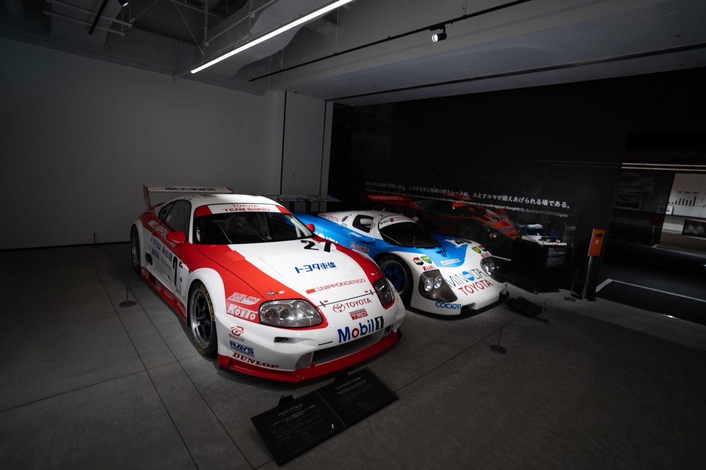
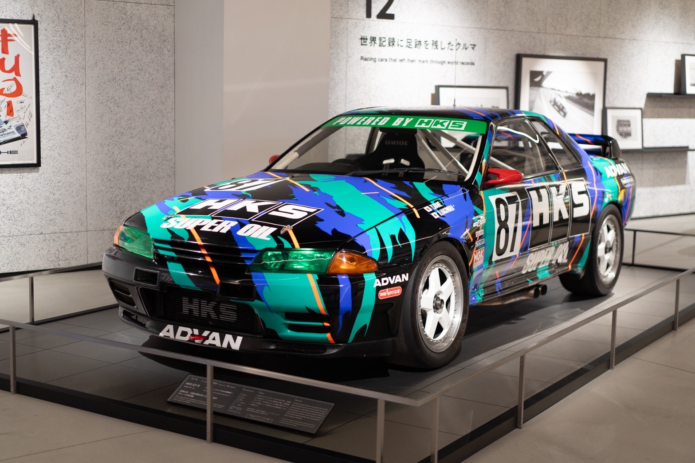
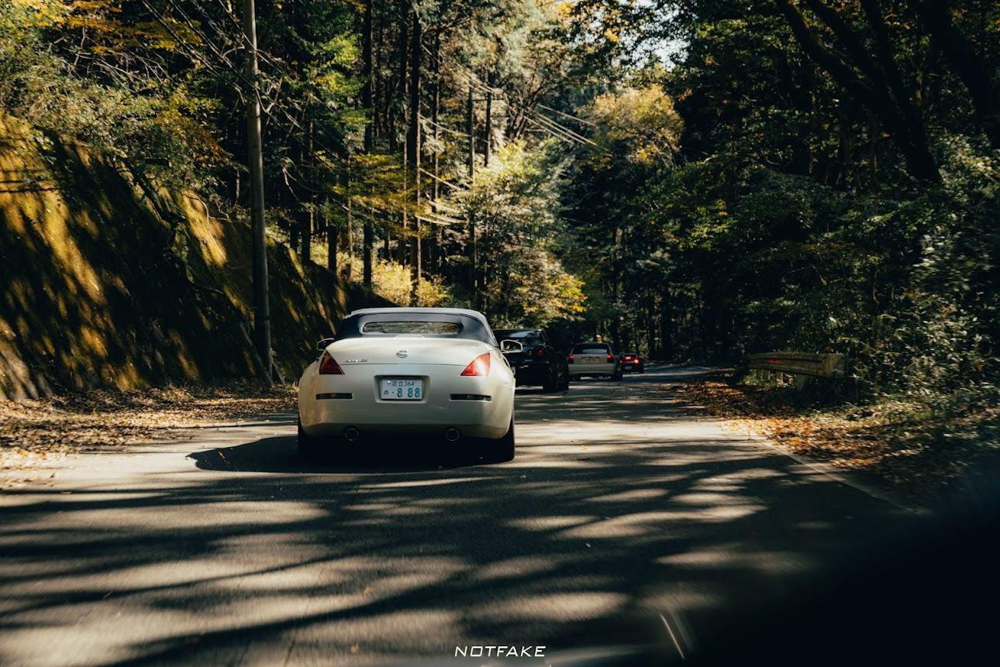
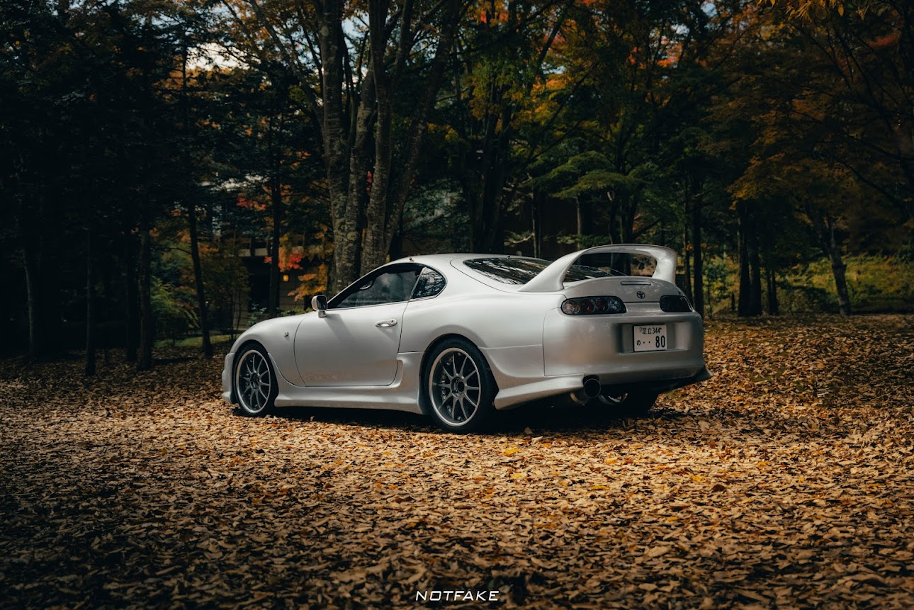
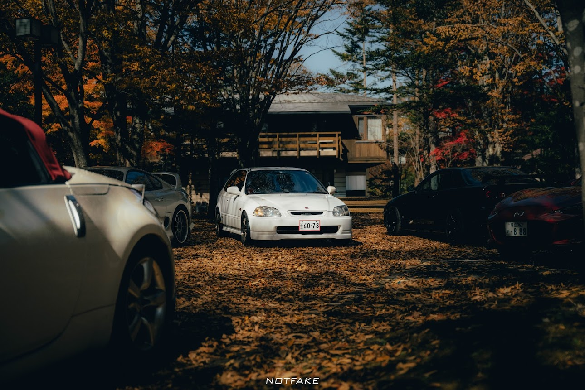
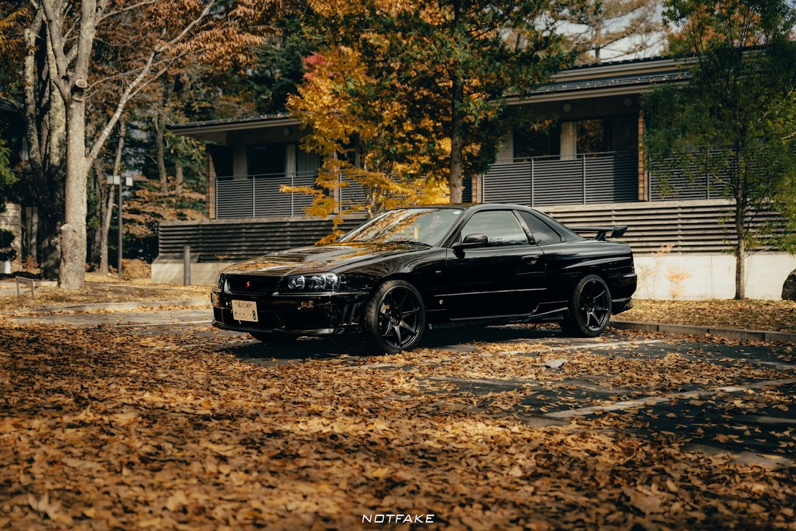
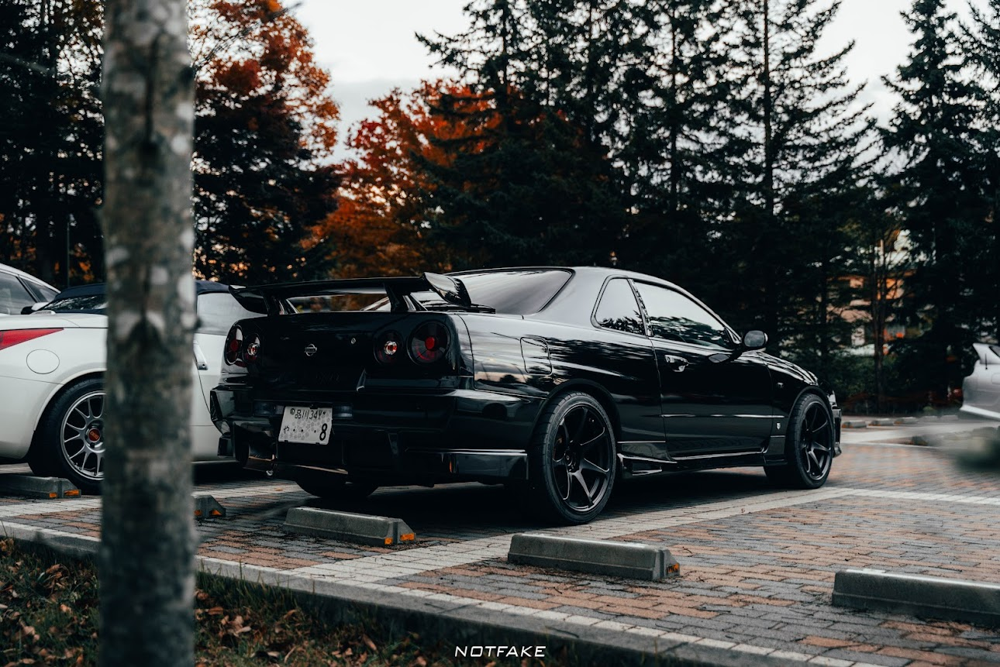
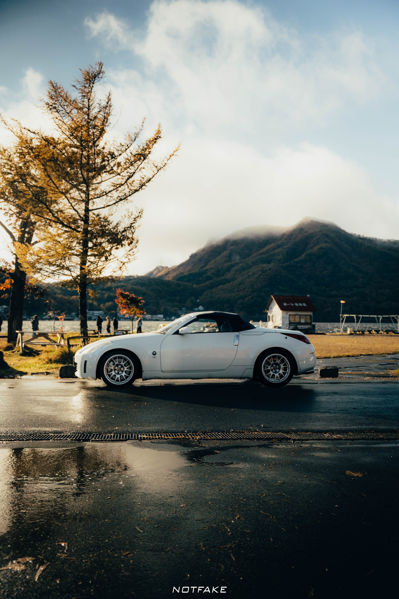

富士之旅
帶您體驗日本賽道文化
 你準備好在富士山下踩下油門了嗎？
立即聯繫NK Garage，讓富士山成為你的背景、讓速度成為你的語言。
預約方式：instagram私訊或Email聯繫我們
頭文字Ｄ聖地巡禮
從動畫到現實的極致體驗



重返藤原拓海的山道
在無數車迷心中，《頭文字 D》不是動畫，而是一段青春、一種信仰、 更是一條條在深夜山道上咆哮的輪胎聲。
現在，你可以親自踏上這些被傳說點亮的道路， 身歷其境感受拓海、涼介、啟介們留下的熱血軌跡！


伊呂波峠（Irohazaka）
栃木縣的伊呂波峠曾是許多車手朝聖地，著名的跳坡， 下坡彎道密集、風景壯麗，是「下坡王者」最愛。

輕井澤 × 碓冰峠
位於長野與群馬交界的「輕井澤」與「碓冰峠」， 一邊是日本最受歡迎的高原度假小鎮， 一邊是無數車迷心中永不退色的傳奇山道。
無論你是想放鬆身心、品味自然、拍攝極致美景， 或是熱愛汽車文化、向《頭文字 D》致敬， 這條路線都將帶給你最豐富又最獨特的旅程。
夢的起點-秋名山（榛名山）
被稱為「秋名山」的 榛名山（Haruna） 是主角藤原拓海每天清晨送豆腐、鍛鍊技巧的地方。
成為拓海，征服秋名的山道以及最險峻的五連髮夾彎。

秋名山是拓海從普通高中生逐漸成為傳奇車手的起點。
每一個彎、每一段路，都能看到《頭文字 D》影子， 彷彿進入漫畫的世界。


準備好走進秋名山了嗎？
立即聯繫NK Garage，秋名山都會以最美的姿態迎接你。